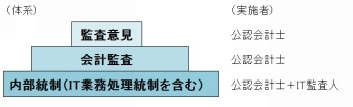
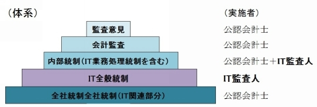

| ＳＥ転職の「プラチナコース」: 監査法人への転職方法 | |
| 北河はじめ | |
| UNKNOWN (2016) | |
【はじめに】
SEは転職の多い職種です。
転職の「ゴールドコース」は、技術力アップによって、キャリアアップ、年収アップを達成する「技術志向コース」です。ただし、これは御自身のポテンシャルをどこまでも信じている人だけのものです。
一方、もっと現実的にキャリアアップ、年収アップを期待できる「プラチナコース」があります。技術志向の方には魅力がないかもしれませんが、キャリア志向の方には大変魅力的なあまり知られていないコースです。そして、基本情報処理技術者試験に合格する程度のＩＴ知識があれば実現可能なコースです。
そのプラチナコースとは、「監査法人への転職」です。
本書では、次のことを具体的に説明します。
・監査法人とはどういうものなのか、なぜ年収アップが期待できるのか？
・ＳＥには、どのような仕事が求められるのか？
・働きやすさ、勤務条件は？
・転職面接で何をアピールすべきか？
・転職面接で好印象を与えるために必要な知識は何か？
本書が、みなさんの「プラチナコース」獲得に役立てば幸いです。
監査業界は狭い業界です、どこかで皆さんにお会いできることを楽しみにしています。
北河はじめ
目次
ＳＥは技術職です。高度な技術や開発言語を用いて、利便性、安全性を実現します。社会のインフラや集客力抜群のゲーム等を作成する大変魅力的な職業です。
そして、社会一般から、ＳＥ集団は日々技術を磨き続ける職人集団であると評価されています。そのような職人集団の一員であるＳＥが更なる高みを求めて転職する場合、理想のコースは、技術力アップを続けながら、キャリアアップ、年収アップを達成するという技術志向の「ゴールドコース」でしょう。
確かに、職人と評価されるＳＥにとっては、ゴールドコースが最高のプランに思えます。しかし、ＳＥ個人として、御自身について考えられた場合はどうでしょうか。
御自身のポテンシャルをどこまで信じているかによりますが、ふとした時にその限界を感じるかもしれません。
かつて純粋なＳＥであった私自身が告白します。私は、「死ぬまで最先端を走り続ける。」と言うほどの技術力も気概もありませんでした。決してサボっていたというわけではありませんが伸び悩みました。
現在は、ハードもソフトも日々進歩しています。その進歩に追い付き、ＳＥとして走り続けるには限界があるかもしれません。若い世代の成長に嫉妬するかもしれません。
確かに、ゴールドコースはＳＥの自尊心をくすぐりますが、転職後は下からの突き上げも厳しく、日々臨戦態勢の厳しいコースと言えます。フリーランスで仕事ができるほどの超一級のＳＥでない限り、ゴールドコースに乗ることは難しく、万が一、乗れたとしてもイバラの路となるでしょう。
そのため、一般的なＳＥの転職として、ゴールドコースに勝るとも劣らないコースが必要です。あまり知られていませんが、それが「監査法人に転職する」というプラチナコースです。
これは、システム構築をするのではなく、構築されたシステムを評価するという立場への転職です。技術力アップを基礎にしたコースではないため、ゴールドコースよりは見劣りし、シルバーコースだと感じるかもしれません。しかし、監査法人は、ＩＴ業界よりも働きやすさと年収の両面で恵まれています。そのため、プラチナコースと言うべきでしょう。
おそらく、あなたは、「監査法人への転職」という選択肢にピンと来ていないでしょう。と言うのも、そもそも、監査法人という存在が社会的にあまり知られていないからです。または、特殊な存在のため，一般のＳＥには関係ないと思い込まれているからかもしれません。
しかし、現実として、基本情報処理技術者試験にしか合格していないようなＳＥですら、監査法人に勤務しています。まさに、監査法人という存在を知っているか、知らないかの違いでしかないのです。
では、まずは監査法人について説明します。
監査法人は、社会的にあまり馴染みのない存在です。
たまに、企業不正に関連してテレビで取り上げられますが、監査法人自体が官公庁や大企業（テレビ局など）と繋がりが深いため、企業不正などのマイナスイメージとなることはあまり放映されません。
また、家電メーカーや鉄道会社のような日常生活で関わる存在でもないため、どのような仕事をしているのかあまり知られていません。
では、本当はどのような存在なのでしょうか。
Wikipediaによると、「監査法人とは、他人の求めに応じ報酬を得て、財務書類の監査又は証明を組織的に行うことを目的として、公認会計士法34条の2の2第1項によって、公認会計士が共同して設立した法人をいう。また、2008年4月1日以降、一定の財務要件や情報公開義務等を満たしている場合に監査法人の損害賠償責任額をその出資の額を上限とすることが認められた。これらの法人は有限責任監査法人を名称として用いなければならない（公認会計士法34条の3）。」となっています。
確かにその通りですが、結局、分かりにくいですね。簡単に言うと、公認会計士が集まって、企業の決算が適正に行われているかを検査（=監査）する集団です。公認会計士という職種も分かりにくいですが、後述します。
監査法人が監査を行うのは大手企業です。法律で監査を受けることを義務付けられている（=法定監査）のは、資本金5億円以上または負債200億円以上の株式会社や、株式を上場している会社などです。また、労働組合監査・学校法人監査なども法定監査が義務付けられています。いずれにしても、いわゆる大企業が対象となります。
また、法律上の義務はなくても、自己の社会的信用を保つためなどの目的で、自己の意思で監査を受けている（=任意監査）法人もあります。法定監査に比べて、監査法人の行う作業が少し省略されたりします。
監査法人に勤務している人のほとんどは公認会計士です。公認会計士とは、監査を行うことを法的に許された者であり、一定の試験合格と実務経験が必須条件となっています。資格取得のための必須条件ではないですが、仕事内容に関連の深い経済学部、経営学部出身の者が多いです。
ここで勘違いをされている方も多いですが、監査は公認会計士しかできないと法的に決められているものの、それは監査チームの代表者が公認会計士でなければならないという意味です。つまり、実際に監査作業を行うのは誰でもよいのです。そのため、公認会計士資格を有していなくても十分に活躍できます。実態として、公認会計士以外にも、海外ビジネスに詳しい方、システムに詳しい方など多様な方が勤務しています。
成果物の考え方も、監査法人はＳＥ業界とは異なります。
SEの場合は、関わるフェーズにもよりますが、サーバ等のハードを導入し、配電・ネットワークを整備し、アプリケーションやプログラムを組込み、動作確認を行い、ユーザマニュアル作成やオペレーション指導を行い、運用の実施や支援を行い、瑕疵担保契約を締結するなどのさまざまな成果物を納品します。SEは技術者であるという面もありますが、システム導入先の会社から見れば、一業者に過ぎません。極端なことを言うと、事務用品を納入したり、警備保安を行ったりする一般的な業者と同じです。（決して、業者としてサービスを提供することを卑下しているわけではありません。）
一方、監査法人の場合、納品する主な成果物は、監査報告書と言われる数枚の紙面のみです。これには、決算業務が適正に行われているか否かを示した定型の文章が記載されています。その紙面提出の過程で、さまざまなアドバイスや助言を行いますが、特段の成果物として決められている訳ではありません。
SE業界は労働集約型の産業だと言われます。SE業界は、家電メーカーのように材料を仕入れて加工して製品にするというのではなく、自己の知識、ノウハウをプログラムやシステム設定として納品します、そのため、掛かる経費のほとんどが人件費です。ただし、外部から調達したサーバなどのハードやパッケージライセンスなどのソフトも合わせて納品することがあり、やや人件費以外に掛かる部分があります。
一方、監査法人の場合には、ほぼ完全に人件費のみです。そして、その単価は一般のＳＥ業界の２．５倍以上はあります。
ＳＥ業界に比べて、監査法人には大きく４つの魅力があります。給与体系、勤務条件、自己研鑽環境、社内対人環境です。
SE業界では大手企業、中小企業による給料格差や、元請下請などによる格差が大きいため単純には比べられないのですが、一般的に、SE業界よりも監査法人の方が給与は高いです。
監査業界には、公認会計士の給与体系は高くなりやすい仕組みがあります。
そして、その給与体系に影響を受けて、公認会計士でない者への給与も高くなりやすいです。もちろん完全に同じというわけではありませんが、同じ職場で働く仲間、同じ顧客に取り組む同志として、一定の水準は維持されます。
公認会計士の給与体系は高くなりやすい仕組みの一つは、監査対象企業の多くは大企業であり、監査報酬額の公開が義務付けられているということです。会社規模に比べてあまりにも少額の監査報酬ではその会社の信頼に関わるため、監査報酬を低く抑えるという動きはあまりありません。
ＳＥ業界では相見積もりや毎回の価格交渉が当たり前ですが、監査業界ではその動向は激しくないです。つまり、顧客である会社にとって、システム（ＳＥ業界）に支払う金額は費用以外の何物でもありませんが、監査法人に支払う金額は費用という面に加えて、社会に対する信頼の証しとなります。そのため、監査報酬は比較的高額で維持されています。
ちなみにですが、各社の監査報酬は、EDINET(http://disclosure.edinet-fsa.go.jp/)に掲載されている年度決算報告書を見ると、だれでも確認できます。
また、あなたが現在お勤めの会社に、監査法人が監査に来ますか？ もし、来るのなら、その監査報酬を経理部などに聞いてみてください。その来社日数に比べてすごく高額な事に驚くでしょう。一日あたりのコストは、大型システムを導入するよりも遥かに高額になっています。
そして、前述の通り、監査法人ではＳＥ業界に比べて労働集約的ですので、人件費（各人の給与）に割り振られる金額も大きくなります。
給与体系は高くなりやすいもう一つの仕組みは、移籍のしやすさです。公認会計士は監査法人にサラリーマンとして勤めていますが、ＳＥ業界に比べて、遥かに独立開業や他社への移籍をしやすいということです。
数年の経験を積んだ公認会計士は、条件の良い他の監査法人に転職することが多いです。また、上場企業等の経営企画部や財務部への転職が容易であったり、独立して税理士や経営コンサルタントとなることが容易であったりします。そのため、監査法人としては、社員を引き留めるために高めの給与となる傾向があります。
このような高額給与の社風は、公認会計士のみでなく、事務局や他の職員にも波及します 。 好条件であるという情報は転職業界に伝わっているのでしょう、事実として、事務局やアシスタントスタッフなど有資格者以外の採用ではかなりの倍率になります。不思議ですが、そのような好条件であるという情報が 、 なぜかSE業界には伝わっていないです。
監査法人の一つである「有限責任監査法人トーマツ」の採用Webサイトを見てみると、次のように書かれています。
【勤務時間】9:30-17:30【休日】土日祝日、年末年始【休暇】有給、慶弔、育児、介護、夏季休暇など
ごく普通の内容であり、おそらく、あなたのお勤めの会社の採用欄にも同様に書いてあるのではないでしょうか。しかし、SE業界とは異なり、監査業界ではこの記載条件が、かなり厳格に守られます。
監査法人の立場と仕事内容を考えれば当然かもしれませんが、次の理由によります。
監査法人の立場として
監査法人は監査対象である他の会社を監査する立場です。そして、監査内容は、会計数値のみでなく内部統制にも及びます。つまり、内部統制として、作成された規則は妥当か、その規則通りに運用されているかという点も検証します。そのため、監査法人自体が、自己が作成したルールを順守していないと示しがつかないため、規則は順守するという社風が形成されます。
仕事内容として、
監査法人に勤めるSEがどのような仕事をするのかは、後ほど、詳しく紹介しますが、簡単にいうと、「システムが正しく動いているかを検証する」となります。こう書くと、単体テスト、結合テスト、システムテスト、ユーザテストなどを緻密に行うように聞こえますが、そのようPGやSEが行うような検証はしません。もっと概要レベルでの検証を行います、例えば、システム設計書は然るべき人（SE)が設計し、然るべき人（PM)が承認しているか等です。
システムの検証水準も概要レベルですし、システムを構築することは絶対にありません。勤務時間外での本番導入や、障害等の緊急対応や、納期間際のバグ取りなどは生じません。
そのため、想定通りの時間に作業が始まって、終わるので、勤務時間は計画通りです。有給休暇も計画的に消化できます。
ＳＥとしてシステムを構築することはなくなりますが、監査対象である大手企業の高度なシステムを隅々までみることができます。ネットワーク構成図、DB設計、プログラム仕様書など社外秘とも言える全てを見ることができます。
これは監査法人の一員としてシステム評価を行うからです。監査法人の公認会計士は、会計監査を行い、その決算業務について適正、不適正などの判断を行い、監査報告書に記載し、決算発表の一部として公表します。もし、不適正と表明されてしまうと、その企業の決算発表が信頼されず、企業自体の信頼が失墜します。当該企業の株価暴落、事業取引関係の悪化など、あらゆる面でマイナスに働きます。そのため、会社側は、公認会計士を「先生」と呼び、会社運営、経理業務を適正に行っていますので見て下さい、という雰囲気になります。
そのような監査の一環として、SEが会社を訪問するので、全てを見て下さいという状態になります。もちろん、そこで知った情報には守秘義務があるため他言はできませんが、高度なシステムを観察し、担当者にいろいろと質問することで、理解を深め、自己のスキルアップに繋がります。スキルアップは自分の存在価値を高め、更なる給与アップなどにも繋がります。
＜公認会計士について＞
公認会計士という職種には、人として魅力的な人が多いです。もちろん、人の好みはいろいろですので、あなたに合うがどうかは不明ですが、概して、次のような特徴があります。
まず、ポジティブで、話好きな人が多いです。彼らが監査先で日頃相手にしている人は、経理部長、営業部長、取締役、監査役、社長などのそうそうたる役職の方々です。そして、現状分析に基づいた将来の話をしています。ポジティブで有益な話を上手にできないと、先方とのコミュニケーションがとれず、彼らの評価は下がります 。 そのため、公認会計士は自然とポジティブで話好きになります。
また、経済、税金、年金など、お金に関わることは詳しいです、その分野の専門家なのだから当然と言えば当然です。そして、真面目で勉強好きです。仕事の基礎となる会計基準や税法、法律は毎年のように変更されます。これはIT技術の進歩よりも激しいです。その変更を常にキャッチアップしないと仕事に支障が出ます。そのため、それらに追いつくために常に自己研鑽をしています。
IT専門家への彼らの敬意は大きいです。社外で先生と呼ばれる彼らですが、経済学などの文系出身の人が多く、IT関係にはやや疎いです。Wordは使えるけど、TEXTエディタは使ったことがないという人も多数います。そして、彼らが監査する会計数値はそれを支える会計システムから出力されますが、そのシステム自体はブラックボックスだと思っています。そのため、そのブラックボックスを解明してくれSEに敬意があります。
仕事柄、人当たりの良い人が多いです、相手を攻撃しても何も生まれないという考え方が染みついているのでしょう。また、将来的に独立を考えている人が多いです。そのため、人当たりは良いにもかかわらず、群れることは少なく、法人への帰属意識はやや薄いです。つまり、派閥的な発想で人の評価を下げようとか、アラを探そうという発想が少ないです。
概して、真面目で、勉強好きで、気持ちよく付き合える人が多い気がします。高収入なため、気持ちに余裕があるのかもしれません。
＜事務職、アシスタントについて＞
事務職、アシスタントにも素敵な方が多いです。監査法人には、公認会計士を支える役職として、事務職、アシスタントがあります。
事務職は、まさに、経費精算や給与振込などの事務作業を行う方です。公認会計士は出張が多かったり、書籍購入や研修参加が多かったり、入退職が多かったりと事務作業が多いため、比較的多数の事務職がいます。
アシスタントは、会計士の作業負荷を軽減するために、比較的容易な作業を専門に行う方です。監査対象企業の増加、監査業務の増加に伴い、アシスタントも増加傾向です。法人全体の収支としては、高給取りの公認会計士を増やすよりは、アルバイト的なアシスタントを増やす方が合理的なのでしょう。
そして、事務職、アシスタントともに言えることですが、監査法人の社風として、他の一般企業に比べて給与が高いです。そのため、募集を掛けると多数の応募があり、その選考が大変なようです。私のところでは、事務職、アシスタントともに全て女性であり、能力、性格、外見ともにその厳しい選考を受けた方々だなぁと納得できます。
監査法人内でＳＥに求められる仕事内容を説明します。システム監査（なぜか、監査法人内では、「IT監査」と呼ばれます。）の位置付けを再認識すると理解しやすいです。
IT監査を行うあなたはＩＴ監査人と呼ばれます。そして、ＩＴ監査人の作業は、いわゆるシステム監査技術者が行うシステム監査と少し異なります。なぜなら、監査法人の目的に依存するからです。
監査法人の主目的は監査意見を表明することです。
正確に言うと、監査意見とは、「経営者が作成した財務諸表が、一般に公正妥当と認められる企業会計の基準に準拠して企業の財政状態、経営成績及びキャッシュ・フローの状況をすべての重要な点において適正に表示しているかどうかについて監手続きを行い、その結果によって得た心証」のことです。
簡単に言うと、監査意見とは、決算発表（通常年４回行います）が、会社の状態を適正に表示しているか示すということです。監査意見には、その表示の適正さに応じて、「適正」、「限定付適正」、「不適正」、「意見不表明」の4つがあります。ただし、この監査意見は公認会計士の仕事なので、IT監査人であるあなたが何かをするわけではありません。
たとえば、経営成績の数値の一つである「売上」について、会社が、「当期の売上は1,000億円です。」と言っているのに対して、公認会計士は、本当にそうなのかを調べます。
調べ方の一つとして、当期の売上の全てについて、ちゃんと商品を発送したのか、相手方は受け取って検収し、実際に支払ったのか、または支払をする気があるのかを調べます。監査対象会社はたいてい大企業ですので、その確認する相手先は何千、何万になるかもしれません。
また、調べなければならないことは売上だけでなく、仕入、固定資産購入、給与支払など多数に及びます。何人で分担しても、とてもではないですが、全てを検証することはできません。
そこで、公認会計士は内部統制を評価し、有効なら、それを前提に会計監査を行います。
内部統制とは、正確には、「財務報告に係る内部統制の評価及び監査に関する実施基準」によると「内部統制とは、基本的に、業務の有効性及び効率性、財務報告の信頼性、事業活動に関わる法令等の遵守並びに資産の保全の4つの目的が達成されているとの合理的な保証を得るために、業務に組み込まれ、組織内のすべての者によって遂行されるプロセスをいい、統制環境、リスクの評価と対応、統制活動、情報と伝達、モニタリング（監視活動）及びIT（情報技術）への対応の6つの基本的要素から構成される。」と定義されています。
簡単に言うと、内部統制が有効ということは、業務の流れ（売上ならば、その発送をしたり、その支払を受けたりという流れ）が適切に運用されているということです。
なお、この評価も公認会計士の仕事なので、IT監査人であるあなたが何かをするわけではありません。
内部統制と監査意見の関係は、「内部統制が有効ならば会社内の業務は適切に行われているはずなので、全件確認することなく、そのうち数件を確認することで判断できる。」という関係になります。
ただし、現在の大企業の内部統制は、全てを人の手だけで行っているわけではありません。会計システムや在庫管理システムなどのITが支えています。これをIT業務処理統制といいます、具体的には、商品の受注量を入力すると、単価が自動的に掛け合わされて請求金額は計算されるなどです。内部統制の検証のために、このようなITの有効性を検証する必要があります。
さて、この検証を誰が行うのでしょうか？つまり、公認会計士が行うのか、IT監査人が行うのかが、少し問題となります。
誰が行わなければならないという基準はないため、監査を効率的に行う観点から実施者を選定すればよいのですが、実態として、業務に深く関連する部分であり、その業務に精通する必要があるため、公認会計士が主体的に行い、そのIT知識の不足する部分をIT監査人が協力するという体制が一般的です。
ここまでを図にすると、次のようになります。

監査法人の目的は監査意見表明です。その他の行動は、監査意見表明を支えるためだけに存在します。
少し細かい話をします。
情報処理業界で言うところの「システム監査」と、「監査法人のIT監査」には違いがあります。この違いは、それぞれの目的が少し違うところから生じます。
監査対象としては、次の違いがあります。
「システム監査」とは、ＩＴ投資が企業全体の経営最適化に役立つことを目的として行います。経済産業省から公表される「システム監査基準」、「システム管理基準」がその指針です。
一方、監査法人のIT監査は、あくまでも決算情報に対する監査意見表明のためにITが有効に機能しているか否かの判断が目的です。日本公認会計士協会の公表するＩＴ委員会実務指針第６号「ＩＴを利用した情報システムに関する重要な虚偽表示リスクの識別と評価及び評価したリスクに対応する監査人の手続について」、ＩＴ委員会研究報告第42号「ＩＴ委員会実務指針第６号に関するＱ＆Ａ」が指針となります。
簡単に言ってしまうと、「システム監査」は企業活動全体を、監査法人の行う「IT監査」は決算発表に関する部分のみを対象とします。
監査視点にも違いがあります。この点でも、監査法人のIT監査は限定的です。
システム監査では画面表示のパフォーマンス（ボタンを押して１秒以内に表示されるなど）がシステムの可用性をして問題になりますが、監査法人のIT監査では問題となりません。極端なことを言うと、経費精算などの月次会計処理に関連する機能ならば、一ヶ月以内に処理が行われば、会計的には問題ないです。
監査人が持つ強制力にも違いがあります。システム監査は会社が任意に行うものであり、その実施時期や監査の深度に強制はありません。つまり、会社が望まなければ、システム監査を行う必要すらありません。基準として経済産業省から公表される「システム監査基準」、「システム管理基準」がありますが、あくまでも、一つの目安であり、特に強制力がある訳ではありません。
一方、監査法人のIT監査は、監査法人の同業者組合である日本公認会計士協会から指導されるものであり、事実上、強制力を持ちます。監査対象となる会社では、ＩＴ監査を受けざるを得ないと言えます。
以上をまとめると、あなたが監査法人に転職して行うＩＴ監査は、「決算数値に関連する部分を強制的に監査するものである。」と言えます。
具体的は後述します。
IT業務処理統制が有効であるためには、それを支えるものが有効でなければなりません。それが、IT全般統制と、全社統制（IT関連部分）で、主にIT監査人が評価を行います。
IT全般統制では、プログラムの変更管理が適切に行われているかなどをIT基盤ごとに評価します。プログラムが適正に稼働しているとＩＴ業務処理統制で評価できたとしても、そのプログラムが簡単に変更できてしまうのならば、プログラムが適正に稼働し続けるという点は保証できません。そのため、ＩＴ業務処理統制を支えるものとしてＩＴ全般統制の状況を検討します。
このＩＴ全般統制部分をＩＴ監査人が担当します。業務面から少し離れ、インフラ設定やプログラム開発の話となるため、ＳＥに活躍が求められるからです。
また、さらに全社統制（IT関連部分）では、経営者がＩＴ全般統制やＩＴ業務処理統制についての方針及び手続を適切に定めているか等の全社的な方針について評価します。ＩＴ全般統制が現時点で有効であったとしても、その基盤となる会社風土などが貧弱では、その継続が危ぶまれるからです。
この全社統制（IT関連部分）は、会社の姿勢であり、ＩＴ部分に限らずに、会社全体としての経営計画などの話になるため、公認会計士が担当します。
以上で、ＩＴ監査に関わる全ての構成が挙がりました。
再度、図にしてみます。

結論として、ＩＴ監査人には、ＩＴ全般統制と、場合によっては、ＩＴ業務処理統制を担当します。
これが、監査人がＳＥに求める領域であり、採用面接時のヒヤリングポイントとなります。
では次に、ＩＴ全般統制の説明を行います。
I T 全般統制とは 、 I T を利用した業務処理統制が有効に機能する環境を保証する間接的な統制であり、その対象範囲としては開発変更、運用保守、アクセス管理、外部委託先管理などが含まれます。
ただし 、 I T 全般統制を適切に評価するためには、まず 、 I T 環境の理解が必要です。 「 I T を利用した情報システムに関する重要な虚偽表示リスクの識別と評価及び評価したリスクに対応する監査人の手続について （ I T 委員会実務指針 第6 号）」（以下では 、 I T ６号と記載します）でも、明確にその必要性が記載されており（４項）、ＩＴ監査人の監査手続きとして実施します。
I T 環境の理解
「 I T 環境の理解」は、会計監査の視点から 、 I T 関連状況を整理し、文書化します。
I T ６号４項に、文書化の視点として次の４点が挙げられています。
・ I T の利用度
・情報システムの安定度
・情報システムの前年度からの重要な変更
・過年度の監査におけ る I T に関連する内部統制上の不備
ここで重要なのが 「 I T の利用度」です。
I T の利用度
I T が会計業務の基礎としてどれだけ利用されているかを、高いか、低いかの２者択一で判定します。目的は、このあとに続く 、 I T 全般統制の要否を検討する材料にすることです。ただ、今日の企業経理を考えた場合、システムに頼らずに出納帳などの紙面のみで行っていることは皆無のため、ほぼ確実に 、 I T 利用度は高いと判断され 、 I T 全般統制は必要となります。
こう考えると 、 I T の利用度を判定する実質的意味はないのですが 、 IT 6 号で求められているため対応します。言ってしまえば、仕方なく形式的に行う、と言えます。
しかし 、5 項で、下記のように 、 I T の利用状況と会計監査に関る考え方が例示されています。考え方や報告書の書き方に少し難しいところもありますが、結局は 、 I T の利用状況は高いとなりますので、あまり深い入りしないのが得策だと思います。
・金融機関等、一般 に I T の利用度が高いと想定される業種に該当しない。
・企業規模が比較的小規模である。
・複雑なシステム処理がない。
・自動化された内部統制ではなく手作業による内部統制により重点を置いている。
・情報システムが、市販の簡易なパッケージソフトウェアのみで、パッケージソフトウェアをカスタマイズせずに、ほぼそのまま使用している。
・アプリケーション間のインターフェースが限定的であり、かつ、アプリケーションの構成が複雑でない。
・その他、システムの使用状況が低い（例えば、ペーパーレスの状況、電子帳簿保存法への対応の有無を考慮する。）。
「 I T の利用度」以外
I T の利用度の判定に加えて、例えば、次のような観点か ら I T に関連する統制環境を理解することが求められています （ 1 1 項）。これらは、ＩＴ全般統制の評価単位検討等で使用します。簡単に言うならば、そのシステムがＩＴ全般統制を行う必要があるか否かということです。
・経営者の関心、理念及び倫理観
・戦略・計画及び組織
・ I T に関する規程及び慣行
・ I T に関する人材の確保
・情報セキュリティ
・ I T 技術要素
情報セキュリティや 、 I T 技術要素と、さらっと規定されていますが、これらはかなりの機密情報です。例えば、例えば下記の内容であり、単なるＳＥが開発時の要件定義として質問しても、通常は企業側に拒否される事項です。しかし、監査法人のメンバーという立場で現場に行くと、企業の方から、不備はないので、是非全部見て下さいと言われます。
機密事項であるシステム要素を見ることは、技術者としては自己の見地を高める上で、大変興味深いです。いろいろなベストプラクティスを見ることができます。もちろん守秘義務があり、公言はできませんが、ノウハウとして自己の中で熟成させる価値はあります。
・ハードウェア関係（ベンダー、ハードウェアの名称、冗長性方法、物理的なセキュリティなど）
・ソフトウェア関係（アクセス管理、ライブラリ管理、ミドルウェア、ネットワークなど）
・バックアップ関係（手段、頻度、バックアップ場所など）
業務処理統制は、通常、業務プロセスにおいて個々のアプリケーションによる取引の処理に適用される手続です。 （ 3 0 項）
次の２つに分類されます。
・プログラムに組み込まれている自動化されたもの
・ I T から自動生成される情報を利用して実施される手作業による内部統制との組み合わせるもの
プログラムに組み込まれている自動化された業務処理統制とは、情報の正確性等を達成するためにアプリケーションに組み込まれたもので、以下のようなものがあります。
・受注データの入力時の単価チェック：
取引データの入力時又は処理時に、事前に登録されているマスター・ファイル上の項目と入力された項目との突合が行われ、一致しない場合には入力データを受け付けない、あるいは、次処理を中止する機能
・取引データの入力時の項目網羅性チェック：
入力が必須とされているすべての項目が入力されていることを確認し、すべての項目が入力されていない場合には入力データを受け付けない機能
・システム間のデータインターフェイスチェック：
データ出力側で把握されているデータ件数等とデータ入力側で把握されるデータ件数等が整合していることを確認し、整合しない場合には入力されたデータ処理を中止するといったシステム上の機能
・端末メニューの使用制限：
処理担当者に許可された業務内容に応じた操作権限をユー ザ I D に事前に付与し、このユー ザ I D 使用者をパスワードや生体情報により認証することにより、許可された処理担当者とみなす機能
システム機能としては、エディットバリデーションチェック、マッチングなどがあります。
I T から自動生成される情報を利用して実施される手作業によるものには、以下のようなものがあります。
・例外リスト：
処理過程の途中において、事前に定められている一定の条件に合致する取引データを出力した情報であり、その出力結果から対応要否を人が判断します。
・売掛金年齢調べ
売掛金残高について、取引データの発生時期とその金額を時系列で表示した年齢調べを出力した情報であり、その出力結果から人が異常性を判断します。
これらの機能について、整備状況、運用状況を検証します。
整備評価として、次の事項などを行います。
・データフロー図やシステム仕様書の閲覧
・ユーザマニュアルの閲覧
・業務、システム部門担当者への質問
運用評価では、整備通りにシステムが稼働していること、開発手法等が遵守されていること等を検証します 。 I T 全般統制が有効であるならば、運用評価は、統制１パターンにつき１件のサンプルテストを行えば十分です。
監査法人に転職するメリットと、ＩＴ監査人に求められている事項がお分かり頂いたと思います。実感されるのは転職後だと思いますが、多少なりともイメージができて、転職してみたいと思って頂ければ幸いです。
さて、ＩＴ監査を実感して頂くためにも、採用面接をパスして頂きたいと思います。
新卒ではなく転職としてキャリア採用される場合には、筆記試験などはなく 、2 回か３回の面接で採用が決定されます。どの監査法人でも同様です。そのため、十分は面接対策が必要です。
採用面接で求められることは、監査法人の職員としての素養があるかです。
そんなに大した内容ではないですが、この視点が意外と漏れているかもしれません。つまり、御自身の技術面だけのアピールでは良い印象は持たれません。
もちろん、監査法人としては 、 I T 業界からの転職者に最低限 の I T 知識、経験を求めますが、特段、高度なものではありません。基本情報処理技術者試験しか合格していなくても採用された例は多数あります。つまり、システムやネットワークを構築したり、プログラムを作成したりするわけではないので、基礎的 な I T 知識があれば十分と言えます。また、必要な知識の補充は、採用後でも間に合います。
では、何を求めるのでしょうか？
一つは、コミュニケーション能力です。
監査法人内の同僚とチームワークのためにも必要ですが、主に求められるのは対外的なものです。つまり、監査対象会社のシステム部や経理部、営業部の担当者の話を聞いて 、 I T 統制状況を理解する能力です。
あなたが、システム構築、プログラム作成の際に、ユーザヒヤリングや要件定義をされたことがあるのなら、それよりも遥かに概括的で簡単なヒヤリングをイメージして頂ければ良いです。
なぜなら、要件定義では、ユーザの頭の中にあるシステム要件を引き出し、その実現可能性、全体整合性を検討する必要があります。しかし、監査法人では、現在動いているシステムについて具体的に確かめるだけだからです。
そのため、ＳＥが行うよりも、遥かに簡単なコミュニケーションで良いと言えます。
もう一つは、バランス感覚です。
I T 監査の最終目的は、システムが会計監査を行う前提として有効か否かを判断するということです。その目的以上に作業をする必要はありません。
他のＩＴ監査人も同様だと思うのですが、私自身も自己の好奇心を満たし、見識を深める教材として、監査対象企業のシステムを調査してしまいます。しかし、あまりやり過ぎると、先方に負担を掛けるとともに往査スケジュールにも悪影響を与えます。そのため、やり過ぎないというバランス感覚が必要です。
バランスを失わないためには、前述のＩＴ監査人の位置付け、役割を再度理解する必要があります。その理解は面接時の受け答えにも現れます。面接官はその部分に反応するでしょう。
もちろん、監査法人とはいえ普通の会社ですので、社会人としてのビジネスマナーや、スケジュール能力などは必要です。ただ、特筆するほどのものでもないでしょう。
面接対応として敢えて強調するならば、あなたの発言に矛盾があれば、その時点で採用の可能性は無くなるということです。
監査とは企業経営のなかの矛盾の有無を検討して意見を述べることであり、公認会計士はそのプロです。そのため、矛盾のある発言はもとより、そのような挙動にも敏感です。
そのため、次の２つだけを強く心に持ってアピールして下さい。他のことは、聞かれた内容に素直に答えれば大丈夫です。
「私は要件定義などでユーザと円滑なコミュニケーションを行うことができる。」
「システムは会社の業務（最終的には経理業務）のために存在する。」
面接 で I T の知識や経験を積極的にアピールする必要はありません。そもそも、彼らはさほど詳しいわけではないので、あまり高度なことを言うと、変に混乱させてしまうだけです。聞かれた場合には、システム構築の一般的な話をすれば十分です。
もし話を広げたいのなら、ユーザ目線で の I T 業界動向に触れる方が望ましいです。 「 I T バカ」ではなくて広い視野を持っている、とアピールできるからです。例えば、昨今 の AS P の動向や 、 SL A として求められるもの、情報漏えい問題などです。
面接で更にアピールするには、どのような知識を持っておくべきでしょうか？
前述しましたが、システム関連の知識補充は不要です。なぜなら、面接官はそれほどの知識はないし、実は、あまり興味がないからです。ＩＴをどのように使用しているかというＡＳＰやハウジングなどには興味があるかもしれませんが、それも補完的なものです。
彼らが本当に興味を持っているのは、会計業務にＩＴがどのように使用されていて、それをどのように監査するのかということです。このように書くと抽象的な印象を持たれるかもしれません。しかし、実は、この考え方の基礎となるもの、つまり、カンニングペーパーがあるのです。それが、 「 IT 6 号」です。
そのため、 「 IT 6 号」を理解しておくことは大変有効です。関連する話を振られたときに、関連する内容を軽く含めて返答すると、それらの基準も視野に入れていると示すことができ好印象となります。この基準は、参考として添付します。
「関連する内容を含めて返答する」としましたが、基準内の表現をそのまま述べるだけでは勿体ないので、自分の言葉で言い換えられるくらいが望ましいと思います。基準自体は平易な表現で書かれているため、特に解釈が必要というわけではありません。ただ、あなたが日頃行っているシステム開発等にあてはめて、具体的に理解し、具体的に返答するというだけです。
可能なら、その理解にユーザの視点（使い勝手や、レスポンスの速さなど）も交えて返答できると、更に視野の広さをアピールできます。採用後 に I T 監査人が相手をするのは、システム開発担当者のような実担当者だけでもなく、システム部部長などの経営戦略に関わる人も含まれてきます。
面接官もそのことは当然認識しており、そのような役職の高い人の前に出して恥ずかしくない人材かどうか、単なるＩＴバカではないかという点も見ています。
IT 6 号を単なる知識に留めず、御自身の思考の基礎にできれば、面接を何ら恐れることはありません。落ち着いて受けるだけです。肩の力を抜いて頑張って下さい。
Ｉ Ｔ6 号 「 I T を利用した情報システムに関する重要な虚偽表示リスクの識別と評価及び評価したリスクに対応する監査人の手続について」 （ I T 委員会実務指針 第6 号）
平 成 2 3年 1 2月 2 2 日
日本公認会計士協会
目次
《Ⅰ 本指針の範囲》
《Ⅱ 本指針の目的》
《Ⅲ 定義》
《Ⅳ 監査計画の策定に当たって の I T に関する留意事項》
《 1 . I T の利用に関する概括的理解》
《 2 . 過年度に入手した情報の利用》
《 3 . I T の専門家との討議》
《 4 . グループ監査における留意事項》
《Ⅴ 内部統制を含む、企業及び企業環境の理解》
《 1 . 企業及び企業環境の理解及び内部統制の構成要素》
《 2 . 内部統制の限界》
《Ⅵ 重要な虚偽表示リスクの識別と評価》
《内部統制とアサーションの関係》
《Ⅶ 評価したリスクに対応する手続》
《 1 . 評価したアサーション・レベルのリスクに対応する監査人の手続》
《 2 . 期中で入手した監査証拠の利用》
《 3 . 過年度の監査で入手した監査証拠の利用》
《Ⅷ 全般統制の不備対応》
《Ⅸ 業務処理統制の不備対応》
《Ⅹ 実証手続》
《 CAA T を利用した実証手続》
《ⅩⅠ 情報システムを利用した不正への対応》
《ⅩⅡ 経営者・監査役等とのコミュニケーション》
《ⅩⅢ 内部監査の利用》
《ⅩⅣ 専門家の業務の利用》
《ⅩⅤ アウトソーシングの位置付け》
《ⅩⅥ 監査調書》
《ⅩⅦ 適用》
《付 録1 I T に関連した監査手続の具体例》
《 1 . 記録や文書の閲覧》
《 2 . 観 察/ システム運用現場視察》
《 3 . 質問》
《 4 . 再計算》
《 5 . 再実施》
《 6 . 分析的手続》
《付 録2 アサーション と I T のコントロール目標の例》
《Ⅰ 本指針の範囲》
1 . 本指針は、財務諸表の監査における重要な虚偽表示リスクの評価の一環として 、 I T に関するリスクを識別及び評価し、評価したリスクに対応する手続を実施するための実務上の指針を提供するものである。
特に、本指針は、監査基準委員会報告 書 31 5 「企業及び企業環境の理解を通じた重要な虚偽表示リスクの識別と評価」（以下「監査基準委員会報告 書 31 5 」という。）及び 同 33 0 「評価したリスクに対応する監査人の手続」（以下「監査基準委員会報告 書 33 0 」という。）を適用するに当たり、重要な虚偽表示リスクに関し て I T に関する手続をどのように実施すべきかについて記載している。
《Ⅱ 本指針の目的》
2 . 本指針における監査人の目的は、財務諸表監査におけるリスクの評価の一環として 、 I T に関する重要な虚偽表示リスクの識別及び評価と、評価し た I T に関するリスクへの適切な対応を立案し実施することによって、意見形成の基礎となる十分かつ適切な監査証拠を入手することである。
なお、監査人が財務諸表監査において重要な虚偽表示リスクのリスク評価手続及び運用評価を実施したとしても、監査人は、内部統制自体の信頼性・有効性に関して意見を表明しない。同様に、監査人が財務諸表監査の一環として 、 I T に関するリスクの評価を実施したとしても、監査人は 、 I T を利用した情報システム自体の信頼性・有効性に関して意見を表明しない。
《Ⅲ 定義》
3 . 本指針では、次の用語をそれぞれ次のような意味で用いている。
(1 ) 「情報システム 」- 人を含めた、手続、インフラ（ハードウェア、設備を含む。）、ソフトウェア及びデータから構成される。多くの情報システムで は I T を幅広く利用している。したがって、以下、本指針では、 「 I T を利用した情報システム」を単に「情報システム」という。
(2 ) 「アプリケーション 」- アプリケーションとは、企業のビジネスプロセスに関連するデータと情報を、入力、格納、処理、保有、伝送又は検索するために必要なコンピュータ・プログラムをいう。
(3 ) 「システム・ソフトウェア 」- 基本ソフトウェ ア (OS ) 、データベース管理システム、ネットワーク管理システム等のビジネスプロセスに関連するアプリケーションが稼動するための基盤となるソフトウェアをいう。
(4 ) 「 I T の専門家 」- 監査人が十分かつ適切な監査証拠を入手するに当たって 、 I T の専門知識を有する個人又は組織の業務を利用する場合の当該専門知識を有する個人又は組織をいう 。 I T の専門知識を有するとは 、 I T の専門的な技能、知識及び経験を有し、かつ、監査人の監督の下で、情報システムに関する重要な虚偽表示リスクの識別、評価及びそれに対応する手続を実施する能力を有することをいう。監査人の利用す る I T の専門家は、監査人の雇用する内部の専門家（監査事務所又はネットワーク・ファームの社員等又は専門職員（非常勤者を含む。））と監査人が業務を依頼する外部 の I T の専門家を含む。
(5 ) 「コンピュータ利用監査技法 」- 監査のツールとして、コンピュータを利用して監査手続を実施するための技法をいう。コンピュータ利用監査技法を、以下 、 Computer-assisted audit technique s の略称として 「 CAA T 」という。
《Ⅳ 監査計画の策定に当たって の I T に関する留意事項》
《 1 . I T の利用に関する概括的理解》
4 . 監査人は、監査計画を策定するに際して、監査業務の範囲に影響を及ぼす事項を識別する必要がある。グループの重要な構成単位がそのビジネスモデルや事業運営にどのよう に I T を利用しているかにより 、 I T が重要な虚偽表示リスクに及ぼす影響は異なると考えられるため 、 I T の利用状況が監査計画にも影響を及ぼすことがある。
したがって、監査人は、監査計画の策定に際して、以下の判定をすることが可能となる程度に重要な構成単位 の I T の利用に関する環境を理解し、重要な虚偽表示リスクの評価の対象とす る I T を把握する（以下、グループ又はその重要な構成単位を単に「企業」と表記している場合がある。）。
・ I T の利用度
・ 情報システムの安定度
・ 情報システムの前年度からの重要な変更
・ 過年度の監査におけ る I T に関連する内部統制上の不備
5 . 企業におけ る I T の利用状況と重要な虚偽表示に関する潜在的リスクとの関係は必ずしも一様ではないが、上記 の4 つの点を総合的に判断した結果 、 I T の利用に伴う重要な虚偽表示に関する潜在的リスクが十分に低いと判断できる場合がある。
例えば 、 I T の利用度は、以下のような状況により低いと判断される場合がある。
・ 金融機関等、一般 に I T の利用度が高いと想定される業種に該当しない。
・ 企業規模が比較的小規模である。
・ 複雑なシステム処理がない。
・ 自動化された内部統制ではなく手作業による内部統制により重点を置いている。
・ 情報システムが、市販の簡易なパッケージソフトウェアのみで、パッケージソフトウェアをカスタマイズせずに、ほぼそのまま使用している。
・ アプリケーション間のインターフェースが限定的であり、かつ、アプリケーションの構成が複雑でない。
・ その他、システムの使用状況が低い（例えば、ペーパーレスの状況、電子帳簿保存法への対応の有無を考慮する。）。
I T の利用に伴う重要な虚偽表示に関する潜在的リスクが十分に低い場合は 、 I T に関する内部統制の理解における 、 I T に関する詳細な理解を省略することが可能である。また、継続監査におい て I T の利用に伴う重要な虚偽表示に関する潜在的リスクが、過年度の監査の状況から十分に低くない場合には 、 I T の利用に関する概括的理解の内容を、内部統制の理解におい て I T に関する詳細内容を理解する際に含めて実施することも可能である。
《 2 . 過年度に入手した情報の利用》
（監査基準委員会報告 書 31 5第8 項 、 A1 2 項 、 A1 3 項参照）
6 . 監査人が当年度の監査において過年度に入手した情報を利用する場合には、当該情報が当年度においても利用できるかどうかについて判断することが求められるが、状況の変化が、過年度に入手した情報の当年度の監査における利用可否に影響を及ぼすことがあることに留意する。状況の変化には、例えば、情報システム部門の重要な担当者の異動や、システム障害の発生頻度の増加といったようなことが考えられるが、このような変化は、情報システムの管理水準の低下や、想定しない処理が生じている可能性を示している可能性があり、過年度に入手し た情報の利用が適当でなくなっている可能性が高まっていることが考えられる。
《 3 . I T の専門家との討議》
（監査基準委員会報告 書 31 5第9 項 、 A1 4 項参照）
7 . 財務諸表に重要な虚偽表示が含まれる可能性に関して監査チーム内で討議を行う際には、すべてのメンバーが参加して討議を行うことは必ずしも必要ではなく、実務的でもないが 、 I T の専門家が参加しない場合でも、情報システムの財務諸表に及ぼす影響を検討する必要があることに留意する 。 I T の専門家との討議の必要性を判断するに当たっては、過年度の内部統制の評価結果、当年度における内部統制環境の変化に関する情報、情報システムに関係する人事異動情報等、内部統制に影響を及ぼす情報の有無に留意する。また、業務処理統制に影響を及ぼす情報については特に留意する。グループ監査の場合も同様である。
《 4 . グループ監査における留意事項》
（監査基準委員会報告 書 60 0 「グループ監査」（以下「監査基準委員会報告 書 60 0 」という。） 第 1 6 項、 第 2 5 項 、 A2 1 項か ら A2 7 項、付 録1 参照）
8 . グループ監査を実施する場合は、グループ監査チームは、監査基準委員会報告 書 60 0 に従い、グループ全体統制を含め、グループ全体、構成単位及びこれらの環境と、連結プロセス（連結のため に I T がどのように利用されているか）を理解することが求められている。
監査人は 、 I T の利用に関する概括的理解を実施する際には、重要な構成単位についてその実施に漏れがないよう留意する。また、グループ財務諸表を作成する際に適用される会計方針や、決算体制を含むその他の統制環境は、監査計画の策定に重要な影響を及ぼすことから、これらの方針や統制環境が 、 I T にどのように反映又は関連しているのかについても留意する。
9 . 重要な構成単位を担当する、グループ監査チーム又はその指示を受けた構成単位の監査人は、構成単位の重要性の基準値に基づいて、構成単位の財務情報の監査を実施しなければならず、当該重要な構成単位に関する「Ⅳ 1.I T の利用に関する概括的理解」及び「Ⅴ 内部統制を含む、企業及び企業環境の理解」は、通常、グループ監査チーム又はその指示を受けたそれぞれの構成単位の監査人によって実施されることになると考えられる。したがって監査人は、役割分担やコミュニケーションに留意する。
例えば、グループ財務諸表提出会社が管理する会計システムを、当該グループの他の構成単位がネットワークを介して利用している場合には、通常、当該システムに対する「Ⅳ 1.I T の利用に関する概括的理解」又は「Ⅴ 内部統制を含む、企業及び企業環境の理解」はグループ監査チームによって行われることになるが、他の構成単位の監査人にとっても当該システムに対するそれらの理解は必要な事項であり、グループ監査チームと他の構成単位の監査人との間でコミュニケーションが不可欠な事項である。
なお、グループ全体統制として理解する事項としては、以下のような例がある。
・ 同一の全般統制によって管理されている、グループの全体又は一部を対象とする集中型の情報システム
・ すべての構成単位又は一部の構成単位に共通す る I T の統制
《Ⅴ 内部統制を含む、企業及び企業環境の理解》
《 1 . 企業及び企業環境の理解及び内部統制の構成要素》
《 (1 ) 統制環境》
《① 企業の事業活動等》（監査基準委員会報告 書 31 5第 1 0項 (2 )、 A2 1 項か ら A2 3 項参照）
10 . 企業は事業活動を行うために情報システムを利用するが、情報システムの状況・特性及び運営を理解することは、情報システムに起因した重要な虚偽表示リスクを適切に識別し評価するための基礎となる。
業務における情報システムの適用範囲、業務フローの中でのオペレーションの状況、データ入出力の態様、技術的な複雑性といった事業活動及び情報システムの種々の状況・特性は個々の企業により異なり、情報システムに起因した重要な虚偽表示リスクの識別及び評価に影響を及ぼす。
例えば、インターネットを利用した販売形態を採用する企業では、受注データは顧客側で企業の情報システムに直接入力され、入力の正確性を企業側で検証することは困難であるため、入力の正確性・網羅性の確保について企業がどのように考慮しているかの検討を要する場合がある。また、サプライチェーンマネジメント や ED I （電子データ交換）を利用して電子商取引を採用する企業では、企業外から接続されるデータ転送に起因する重要な虚偽表示リスクの検討を要する場合がある。
監査人は、企業の事業活動等を理解する際には、その運営及び情報システムの状況・特性を考慮する。
《② 統制環境の理解》（監査基準委員会報告 書 31 5第 1 3 項 、 A6 5 項か ら A7 4 項参照）
11 . 監査人は、統制環境が、実施するリスク対応手続の種類、時期及び範囲にも影響を及ぼすことから、情報システムにおけ る I T の利用に関する概括的理解に加えて、例えば、次のような観点か ら I T に関連する統制環境を理解する。
(1 ) 経営者の関心、理念及び倫理観
経営者の関心、理念及び倫理観は、そのすべてが財務諸表監査に直接関係するものではないが 、 I T に関連する方針や社内規則に影響を及ぼすとともに、企業の構成員の内部統制に対する意識・姿勢に大きな影響を及ぼすことから、監査人はこれらに留意する。
経営者の情報システム部門の機能やその担当者に対する姿勢、情報システム投資に対する考え方、情報システムの信頼性及びセキュリティに関する意識や取組姿勢、法令遵守に対する姿勢もこれに含まれる。
また 、 I T に関する経営者の関心は、これまで情報システム部門寄りの技術的な対策から始まり、人や組織に対する管理の重要性が認識されるにつれて、全社的なレベルで の I T マネジメントひいて は I T ガバナンスへと進展している。監査人は、こうした企業 の I T ガバナンスに関する進展や浸透の状況に関しても留意する。
(2 ) 戦略・計画及び組織
企業の目標を達成するため に I T に関してどのような戦略・計画を採用するかは、企業内の各業務に対する資源配分を決定する要因となり、情報システムの規模や内容、複雑さを通し て I T に関する内部統制に影響を及ぼす 。 I T に関する組織は、その形態や構成、権限及び職責を通し て I T に関する統制の実態に影響を及ぼす。これらのため、監査人は、経営者が策定した戦略・計画等の内容、及び、情報システムの規模、内容、複雑さに相応の組織、権限、職責が構築されているかについて留意する。
特に予算は、企業の戦略・計画に対する考え方が具体的に現れることから、企業 の I T に関する組織の状況を把握する上で、重要な判断材料を提供する。
(3 ) I T に関する規程及び慣行
I T に関する業務の態様によって、内部統制が異なるため、規程として明文化されている内容について、監査人は十分に理解する。また、明文化されていないが、組織の慣行として実施されている事項についても留意する。
(4 ) I T に関する人材の確保
監査人は 、 I T 管理者がその企業の情報システムに関して十分な知識や経験等を有しているか、情報システムの利用については 、 I T 担当者のみならずユーザに対しても適切な教育を行う必要があることに経営者が注意を払っているか、情報システムの維持・継続に必要な人員を確保しているかに留意する。
(5 ) 情報セキュリティ
情報セキュリティに係る内部統制ない し I T ガバナンスの有効性は、財務情報の信頼性に対して、企業の業務処理プログラム及びデータを保護する方針及び手続の設定を通じ、直接又は間接的に影響を及ぼす。そのため、経営者は情報資産を保全するためのセキュリティを確保するとともに、その方針をセキュリティ・ポリシーとして社内に周知徹底させる。監査人は、経営者の情報資産に対するセキュリティの認識、リスク評価過程及びリスクに対する対応の状況に留意する。
(6 ) I T の技術要素
インターネット 、 ED I による電子商取引 、 I C タグを利用した取引等の電子媒体を利用した取引形態においては、他社が入力又は作成したデータが自社の入力データとなることや逆に自社の出力データが他社の入力データとなることがあり、取引記録が電子データでしか残らない等、業務プロセスや内部統制に影響を及ぼすことがある。また、企業外部の人間が、企業内部の基幹システムで処理されるデータの元となる取引情報を入力することによって、企業の情報システムに重要な影響を及ぼす場合がある。さらに 、 I T の発達に伴う社会の基本的なインフラの変化は、企業が保有する情報システムを陳腐化させる可能性がある。監査人は、経営者 が I T の技術要素に内在する特性に応じた適切な管理範囲及び管理方法を設定しているか否か、情報システムを他社と連携させる際のリスクについて考慮しているか、及び 、 I T の動向に注意を払っているかに留意する。
《 (2 ) 企業のリスク評価プロセス》（監査基準委員会報告 書 31 5第 1 4 項から 第 1 6 項参照）
12 . 監査人は、企業のリスク評価プロセスを理解するに当たり、以下 の I T に関連する内部統制の特徴を考慮する。
《① 内部統制におけ る I T の利点》（監査基準委員会報告 書 315A5 2 項参照）
13 . 情報システムは、あらかじめ規定した処理を組み込んだコンピュータ・プログラムによって実行される。したがって、あらかじめ規定した処理の内容が適切であれば、決められた処理を決められたときに、漏れなく実行することから、大量の取引やデータを処理する場合であっても、あらかじめ定められた方針や規程に従い一貫して処理し、複雑な計算を実行できる。また、その処理過程と処理結果を電子データで保管するようにしておけば、その電子データを基に追加的な分析をすることが容易に可能となる。
14 . あらかじめ規定する内容が、ユーザの識別とユーザごとに可能な処理を制限するというものであれば、適切な職務の分離を維持・確保することが可能となる。
《② 内部統制におけ る I T のリスク》（監査基準委員会報告 書 315A5 3 項参照）
15 . 情報システムは、あらかじめ規定した処理を組み込んだコンピュータ・プログラムによって実行される。したがって、あらかじめ規定した処理の内容が適切であっても不正確なデータをそのまま処理してしまう、あるいは、あらかじめ規定した処理の内容が適切でなければ、適切なデータを入力しても誤った処理結果となる。さらには、両方が同時に起きる可能性もある。例えば、担当者が入力画面で証憑と異なる金額をシステムに入力した場合も、販売のリベート計算のシステムでプログラムの条件設定を誤った場合のいずれも処理結果は誤ったものとなる。また、システム又はプログラムの必要な変更の不備により、修正されるべきプログラムの不具合が残ってしまい、誤った処理が継続してしまう可能性がある。
16 . アクセス権の管理・運用が適切に行われていないことは、以下のような様々なリスクにつながる可能性がある。
・ マスター・ファイル内の情報のデータの未承認の変更、例えば、商品の売価マスターが変更されてしまうと、売上金額が誤って計上されてしまう可能性がある。
・ システム又はプログラムの未承認の変更、例えば、リベートの計算条件を承認されない条件に変更されてしまうと、リベート金額が誤って計上されてしまう可能性がある。
・ 不適切な手作業の介在、例えば、仕訳データが承認を経ることなく直接変更されてしまうと、事実と異なる仕訳が計上されてしまう可能性がある。
・ データの消失又はデータにアクセスできない事態が生じた場合、適切に計上された仕訳が削除されてしまうことと同じ効果を生ずる、又は、情報を適切なものに修正しようとすることができなくなる可能性がある。
特に、職務の分離によって割り当てられた権限を越えるアクセス権を有している担当者が存在する場合、例えば 、 I T 担当者に開発と運用の両方の権限を与えているような場合には、相互牽制なく単独で本番用のプログラムを変更してしまうことが可能となることから、プログラムの改ざんにつながる可能性がある。
《③ 監査人がリスク評価の際に留意すべき手作業による又は自動化された内部統制の特徴》（監査基準委員会報告 書 31 5第 1 1 項 、 A5 0 項 、 A5 1 項 、 A5 4 項 、 A5 5 項参照）
17 . 監査人は、内部統制の整備及び運用状況を評価しなければならないが、内部統制には、手作業によるもの、自動化されたもの、あるいは、両者を組み合わせたものがある。それぞれの特徴を理解した上で、リスク評価やリスク対応手続に及ぼす影響を検討することが求められる。
18 . 手作業による内部統制は、作業の承認、査閲、調整項目の調整手続や追跡調査等のように、判断が求められるような場面で有効となることが多い。コンピュータ・プログラムやデータが、不正に改ざんされて、決められたとおり実行されていないことがないかを監視し、必要な対策を講ずることは手作業による内部統制が中心となる。しかし、手作業による内部統制は容易に回避、無視又は無効化することができ、また、単純な間違いを起こしやすいため、一般的に、自動化された内部統制よりも逸脱が多くなる。
19 . これに対し、自動化された内部統制は、あらかじめコンピュータ・プログラムに組み込まれるもので、定義された内部統制は同一の水準で運用される。しかし、予定していない状況やあらかじめ処理対象としていないデータには対応できない。そして、自動化された内部統制は、あらかじめ規定した処理を組み込んだコンピュータ・プログラムによって実行されるため、プログラム開発の段階で認識できなければ追加することは困難である。
20 . 企業によっては、取引の開始から記録、処理、報告に至るまでの手続を自動化することがある。このような場合には、関連する会計記録等は、紙ではなく電子的に記録されるため、監査証跡の確保について留意する。
《④ システムの特性に合わせた評価（簡易システム）》（監査基準委員会報告 書 315A5 6 項参照）
21 . 監査人は、情報システムの特性を考慮に入れてリスク評価を実施する。システムが簡易で、入力原票と処理結果を手作業で検証できるような場合には、監査人は自動化された内部統制を考慮せずに、リスク評価及びリスク対応手続を実施することも考えられる。
《 (3 ) 情報システムと伝達》
《① 財務報告に関連する情報システム》（監査基準委員会報告 書 315A7 7 項参照）
22 . 監査人は、リスク評価手続の一環として、企業の財務情報の生成から報告までの流れを情報システムとして理解する。情報システムは企業がデザインした手続及び記録により構成されており、監査人は、その手続が手作業によるものか又は自動化されたものか、あるいは紙媒体による記録か電子データとしての記録かを問わず、理解する必要がある。財務情報は個々の仕訳の記録に基づくため、仕訳生成過程を理解することはリスク評価手続において重要である。仕訳生成は財務報告プロセスをはじめ、販売購買等の様々な業務プロセスで行われる。
監査人は、財務諸表に重要な影響を及ぼす企業の活動に係る取引種類を理解する。取引以外の財務情報に関係する事象や状況も財務諸表に重要な影響を及ぼす場合があるため、企業の主要な取引だけでなく、取引以外の財務報告に影響を及ぼす事象や状況を把握する情報システムに関しても理解する。
監査人は、取引の開始から記録、処理、報告に至るまでの業務プロセスのフローないし会計処理過程のうち 、 I T が利用されている部分を識別するために、アプリケーションの構成を理解する。取引以外の財務報告に影響を及ぼす事象等についても同様に理解「する。これは、企業が利用す る I T を理解する際の基礎となるため、監査人は、企業の業務活動の内容や流れ 、 I T が利用されている部分と利用されていない部分の範囲や相互の接点等に留意する。
23 . 企業の財務諸表は、アプリケーションから出力される情報によって作成されるが、情報システム に I T が利用されている場合は、通常、情報は種々の業務アプリケーションで作成され、その情報が会計アプリケーションに反映される。このため、監査人は、これらのアプリケーションによって作成される財務情報の信頼性を確保することに関連する内部統制を評価する必要がある。また、経営者が財務情報以外の情報を利用しており、それを監査上利用する場合には、監査人は財務情報以外の情報の信頼性の確保についても留意する必要がある。情報の信頼性は、情報システムが有効に機能しているか否かに大きく依存している。情報システムが有効に機能していることは、企業の経営資源（人、物、金）の状態が、その企業の業務プロセスにおいて、適時かつ正確に情報として反映されていることをいう。情報システムは、企業の取引の開始から記録、処理、報告にまで関連する。また、取引以外の会計に関する事象にも関連する。情報システムには、単に情報を処理するのみではなく、誤った処理をエラーとして把握するチェック機能、捕捉したエラーを修正し、最終的に正しい会計情報を報告する機能が求められる。利用可能な監査証拠が紙媒体の文書で存在せず、電子媒体のみでしか存在しない場合がある点に留意する。
監査人は、アプリケーションの構成だけでなく、それを支え る I T インフラの概要を合わせて理解する（【 図1 】参照）。
・ ハードウェア構成
・ システム・ソフトウェア構成
・ ネットワーク構成
・ アプリケーション間の関連
《② 関連する業務プロセス》（監査基準委員会報告 書 315A8 0 項参照）
24 . 監査人は、財務諸表の重要な勘定科目が、どのような取引、企業の業務プロセス及びアプリケーションと関連しているかについて理解する。【 図2 】は、販売取引における売上と入金の業務プロセス、ファンクション（働き）及び会計データとの関連を、一つの例として図式化したものである。企業の各業務プロセスはファンクションごとに細分化され、そのファンクションに基づいてシステム化される場合が多い。例えば、販売取引の売上プロセスは、受注や出荷等のファンクションに分類され、必要に応じてシステム化される。監査人は、財務諸表の勘定科目と取引、業務プロセス及びアプリケーションとの関係を理解するに当たって、必ずしもこのような図を作成する必要はないが、主要な取引等について、どの会計データがどのアプリケーションに依存しているのかを理解する。また、監査人は、その業務処理が手作業によるもの か I T を利用しているものかを識別し、重要な勘定科目に関する財務情報の信頼性を確保することに関連する内部統制を理解する。監査人は、理解した関係が実際に存在することを確かめるため、ウォークスルーを実施することがある。
《③ 仕訳入力》（監査基準委員会報告 書 315A7 8、 A7 9 項参照）
25 . 取引を理解するに当たっては、業務プロセスの中で、どのイベント（事象・時点等）で仕訳が計上されるか、仕訳計上日、勘定科目、計上金額といった仕訳の条件がどのように決定されるかに留意する。
手作業により仕訳入力が行われる場合は、仕訳の条件を理解するだけでなく、内部統制により、仕訳入力の正当性、網羅性、正確性、アクセス制限による職務の分離等が確保されているかに留意する。一方、経常的な取引や定期的に発生する仕訳を記録する場合には、自動仕訳による仕訳入力が行われることが多い。自動仕訳についても仕訳の条件とそれに関連する内部統制に留意する。自動仕訳の場合には、自動化された内部統制が組み込まれている点に留意する。
26 . 非経常的、通例でない取引に関する仕訳については、新規の会計処理や見積りに基づく処理等、経常的な取引に関する仕訳に比して内部統制が十分に機能せず、重要な虚偽表示リスクが高い可能性がある。監査人は仕訳生成の統制について理解するだけでなく、必要に応じて仕訳生成の元となる取引内容や、数値の算定方法等についても十分に理解し、仕訳の勘定科目や金額が妥当であることを理解する。
上記の手続を行うに当たり、監査人は非経常的、通例でない取引に関する仕訳を識別する必要がある。自動化された手続により帳簿が作成されている場合には、上記のような仕訳を識別する方法とし て CAA T が有効となる場合が多い。
27 . 取引以外の財務情報に関係する事象や状況（資産の減価償却、売掛金の評価、金融商品の公正価値評価等）に情報システムが利用されており、財務報告に重要な影響を及ぼす場合には、取引の場合と同様に、監査人はその情報の信頼性について評価する。
28 . 小規模企業の場合、手作業による内部統制は、財務報告に関連する情報システムと関連する業務プロセスが、大規模企業よりも複雑でないことがあるが、情報システムについては、必ずしも企業規模の大小に比例しないことがある。インターネットを利用した事業を展開する場合等、企業の規模が小さくても、売上に関係する販売システムに複雑で高度 な I T を利用する場合がある。顧客からの注文が人手を介すことなく仕入先に発注され、顧客に配送される場合等、その業務プロセスと利用される情報システムは高度な機能を有することもある。逆に、企業規模が大規模でも、簡易な会計のパッケージソフトウェアを利用する場合もある。したがって、情報システムが高度な機能を有するか否かは、単に企業規模の大小ではなく、財務報告と関連する業務プロセスと利用す る I T の複雑さを踏まえて、判断しなければならないことに留意する。
《 (4 ) 統制活動》
《① 統制活動の理解》（監査基準委員会報告 書 31 5第 2 0 項 、 A9 1 項参照）
29 . 監査人は、企業の統制活動の理解に際し 、 I T に起因するリスクに企業がどのように対応しているかを理解しなければならない。企業が利用す る I T の範囲や程度は統制活動の形態に影響を及ぼす。
I T を利用した情報システムに対する内部統制には、業務処理統制と全般統制が含まれる 。 I T を利用した情報システムに対する内部統制が、正確で網羅的な情報の適時の提供と、情報システムにより処理されるデータのセキュリティを保持している場合、有効であると判断される。なお、判断するに当たっては、発生した取引が正規の手続により承認されているか等、情報の正当性を担保しているかを検討する。
《② 業務処理統制》（監査基準委員会報告 書 315A9 3 項参照）
30 . 業務処理統制は、通常、業務プロセスにおいて個々のアプリケーションによる取引の処理に適用される手続であり、あらかじめプログラムに組み込まれている自動化された業務処理統制と 、 I T から自動生成される情報を利用して実施される手作業による内部統制との組み合わせにより構成されている。
31 . プログラムに組み込まれている自動化された業務処理統制
情報の正確性、網羅性、適時性、正当性等を達成するためにアプリケーションに組み込まれた内部統制である。例えば、以下のようなものがある。
・ 受注データの入力時の単価チェックのように、取引データの入力時又は処理時に、事前に登録されているマスター・ファイル上の項目と入力された項目との突合が行われ、一致しない場合には入力データを受け付けない、あるいは、次処理を中止する機能
・ 取引データの入力時の項目網羅性チェックのように、入力が必須とされているすべての項目が入力されていることを確認し、すべての項目が入力されていない場合には入力データを受け付けない機能
・ システム間のデータインターフェイスにおいて、データ出力側で把握されているデータ件数等とデータ入力側で把握されるデータ件数等が整合していることを確認し、整合しない場合には入力されたデータ処理を中止するといったシステム上の機能
・ 端末メニューの使用制限のように、処理担当者に許可された業務内容に応じた操作権限をユー ザ I D に事前に付与し、このユー ザ I D 使用者をパスワードや生体情報により認証することにより、許可された処理担当者とみなす機能
・ 利息、減価償却、外貨換算等の自動計算
32 . I T から自動生成される情報を利用して実施される手作業による内部統制
情報システムから出力された情報を利用して手作業による内部統制として実施する。手作業による内部統制において利用する情報には、以下のようなものがある。
・ 例外リストのように、処理過程の途中において、事前に定められている一定の条件に合致する取引データを出力した情報
・ エラーリストのように、プログラムに組み込まれている自動化された業務処理統制において正常なデータではないと判断され、継続処理が中断となった対象データを出力した情報、あるいは、継続処理とは別の処理となった対象データを出力した情報
・ ある時点における売掛金残高について、その残高を構成する取引データの発生時期とその金額を時系列で表示した年齢調べを出力した情報
・ 一定期間に入力された仕訳データを母集団とし、事前に登録された仕訳パターンに該当しない仕訳データを出力した情報
33 . 前項に記載している手作業による内部統制において利用する情報や自動化された会計処理手続については、自動化された業務処理統制と同様に全般統制により支援され る I T により自動化された機能であるため、必要な評価作業を行う。ここでいう自動化された会計処理手続とは、計算、分類、見積、その他、会計処理を手作業に代わりアプリケーションが行う手続である。
《③ 全般統制》（監査基準委員会報告 書 315A9 2 項参照）
34 . 全般統制は、多くのアプリケーションに関係する方針及び手続であり、情報システムの継続的かつ適切な運用を確保することにより、業務処理統制が有効に機能するよう支援する。全般統制には、通常、以下の事項に対する内部統制が含まれる。
・ データ・センターとネットワークの運用
・ アプリケーションの取得、開発及び保守
・ システム・ソフトウェアの取得、変更及び保守
・ プログラム変更
・ アクセス・セキュリティ
35 . データ・センターとネットワークの運用
データ・センターとネットワークの運用では、例えば、情報システムの稼動確認、臨時処理、障害が発生した場合の復旧、プログラムやデータの保全等に係る内部統制が識別・評価される。
36 . アプリケーションの取得、開発及び保守
新規の情報システムの取得・導入には、外部からの購入や自社又は外部業者における開発、あるいはその中間の形態が存在する。例えば、導入手続に基づく開発の各段階での承認、適切な立場にあるユーザによるテスト等が内部統制として識別・評価される。アプリケーションの導入においては、既存のアプリケーションのデータを新規のアプリケーションで利用するために変換することが必要となる。この場合、データの変換が正確で網羅的であることを確かめるための内部統制に留意する。
37 . システム・ソフトウェアの取得、変更及び保守
アプリケーションが稼動する基盤であるシステム・ソフトウェアについても、プロセスの各段階での承認やテストといったアプリケーションと同様の内部統制を識別・評価する。システム・ソフトウェアの取得、変更及び保守がソフトウェア開発の一環として実施され、内部統制の実施者や手続が同じ場合には一括して評価することができる場合がある。なお、外部のベンダーにより変更及び保守が行われている場合には、その部分は別の内部統制として識別・評価する場合がある。
38 . プログラム変更
プログラムの変更では、例えば、システム変更担当部署とシステム運用部署の分離、変更対象プログラムの十分なテストの実施及び機能確認、プログラム導入前後の承認等が、内部統制として識別・評価される。
39 . アクセス・セキュリティ
アクセス・セキュリティでは、例えば、ユー ザ I D 管理やログ管理といった、プログラム及びデータ等の情報資源へのアクセスを制限するための論理的セキュリティのツールの導入・運用、入退出管理や情報機器への物理的なアクセス制限等に係る内部統制が識別・評価される。
《④ 全般統制の評価範囲》
40 . 全般統制は、大型汎用コンピュータやクライアント・サーバ型コンピュータ、あるいは 、 EU C やスプレッドシート等利用するすべてのタイプの情報システムにおいて存在している。
業務処理統制が評価の対象となる場合には、それを支える全般統制に依存している程度と範囲について検討し、全般統制の評価範囲を決定する。したがって、企業のすべての情報システムを対象として、評価を実施するものではない。
また、全般統制の評価は必ずしも対象となる情報システムごとに実施しなければならないものではなく、情報システムの種類等や設置場所、あるいは、運営組織を考慮し、共通に評価できるものを一つの評価単位とすることも可能である。
《⑤ 監査人が利用する企業が作成した情報の信頼性》（監査基準委員会報告 書 50 0 「監査証拠」（以下「監査基準委員会報告 書 50 0 」という。 ） A4 9 項参照）
41 . 内部統制の評価手続や実証手続の実施に当たって、各種のリスト等の企業が情報システムを利用して作成した情報を利用する際には、その情報の正確性や網羅性を確かめるための手続を実施する。なお、業務処理統制の評価や他の実証手続を実施する過程で確かめられる場合がある。
《 (5 ) 監視活動》（監査基準委員会報告 書 31 5第 2 1 項、 第 2 3 項 、 A9 4 項 、 A9 5 項 、 A10 0 項参照）
42 . 監査人は、監査に関連する統制活動に対するものを含め、企業が財務報告に係る内部統制の監視に用いている主要な活動を理解し、どのように内部統制の不備の是正措置を講じているかを理解しなければならない。
また、監視活動に使用される情報の多くは企業の情報システムによって作成されるため、内部統制の構成要素としての企業の監視活動の理解の一環として、企業が監視活動に利用している情報の情報源とともに、経営者が利用している情報が監視活動にとって十分に信頼できるとしている理由を理解する。
監視活動 に I T が利用されているケースにおいては、企業が情報システムの設計段階で、あらかじめ監視すべき項目を設定していなければ、必要な情報を入手できない場合があることに留意する。
《 2 . 内部統制の限界》
（監査基準委員会報告 書 315A4 3 項 、 A4 4 項、及び 同 24 0 「財務諸表監査における不正」（以下「監査基準委員会報告 書 24 0 」という。） 第 3 0 項参照）
43 . 内部統制には限界があるため、下記のような場合に、本来意図した機能を果たせなくなることがある。
内部統制は、意思決定時の判断誤りや、過失により機能しなくなる場合がある。例えば、会計システムのパスワードの漏洩により職務の分離を無効化してしまう場合や、エラー・レポートが適切に出力されても、担当者がエラーの意味を理解していなかったり、モニタリング等のフォローを適切に行っていない場合には、内部統制は有効でなくなってしまうことがある。
また、内部統制は、共謀による場合、又は経営者や部門責任者等が不当に内部統制を無効化した場合にも、本来の機能を果たせなくなる。
特に、情報システムにおいては、意図的な会計記録の改ざんについて、その発見や追跡が容易でないケースが多いことに留意する。
《Ⅵ 重要な虚偽表示リスクの識別と評価》
《内部統制とアサーションの関係》
（監査基準委員会報告 書 31 5第 2 4 項、 第 2 5 項 、 A10 1 項か ら A10 9 項 、 A11 1 項か ら A11 3 項参照）
44 . 重要な虚偽表示リスクは、①財務諸表全体レベル、②アサーション・レベル、の二つのレベルで識別される。
財務諸表全体レベルの重要な虚偽表示リスクは、特定のアサーションと必ずしも結び付けられるものではないが、経営者による内部統制の無効化のように、様々なアサーション・レベルにおける重要な虚偽表示リスクを高めることがある状況を意味する。また、監査人が内部統制を理解した結果、監査が実施可能かどうかについて疑問を抱く場合もある。例えば、全般統制の不備が長期間放置されていたり 、 I T の安定度が低く会計記録の信頼性について懸念を抱かざるを得ないような場合が考えられる。このような場合には、情報システムが財務諸表全体に及ぼす影響を考慮して重要な虚偽表示リスクを識別することが必要である。
評価したアサーション・レベルの重要な虚偽表示リスクに応じて、実施するリスク対応手続の種類、時期及び範囲が決定される。アサーションには、勘定残高に係るアサーションと取引種類や会計事象に係るアサーション、及びそれらを組み合わせて一つのアサーションとして設定することがある。
アサーション・レベルの重要な虚偽表示リスクを評価する過程において、監査人は、特定のアサーションにおける重要な虚偽表示の防止又は発見・是正に役立つ内部統制を識別することがある。内部統制は、アサーションに直接的にも間接的にも関係し得るものである。全般統制は、直接にはアサーションには結び付かず、アサーションに直接結び付く業務処理統制を支援することにより、間接的に結び付くことが多い。
また、アサーションは、財務報告の観点であるが、経営者がその情報システムを有効なものとするため に I T のコントロール目標を確保していることを確かめてアサーションと関連付ける場合もある。
45 . 監査人は 、 I T に関連した虚偽表示リスクの判断においては、金額のみだけではなく、性質を含めて当該リスクが企業に及ぼす潜在的な影響の大きさ等も考慮する。例えば、販売管理システムの場合、アプリケーション全体の管理者の権限は、売掛金等の特定のデータへのアクセス権を持つ担当者の権限よりも影響が大きいため、リスク評価手続においては慎重な判断を要する。
《Ⅶ 評価したリスクに対応する手続》
《 1 . 評価したアサーション・レベルのリスクに対応する監査人の手続》
《 (1 ) 全般統制のリスク対応手続の実施》（監査基準委員会報告 書 33 0第9 項 、 A2 3 項、及び 同 500A3 1 項参照）
46 . 監査人は、リスク対応手続の立案に当たって、監査対象期間における業務処理統制の継続的な運用の有効性を確かめるため、関連する全般統制の運用状況の有効性に関して、十分かつ適切な監査証拠を入手する運用評価手続を立案し、実施する必要性について検討する。全般統制については、それが効果的に機能するように支えている業務処理統制のリスク評価を勘案して手続を実施する。
47 . 全般統制の運用評価手続には、例えば、以下のような手続を含む。
・ 変更依頼やテスト、移行に係る記録を閲覧し、適切なプログラム変更の手続に従って実施されていることを確かめる。
・ システムの作業指示や運用に係る記録を閲覧し、適切なシステム運用の手続に従って実施されていることを確かめる。
・ システム障害に係る記録を閲覧することにより、発生した障害が網羅的に記録されていること、記録された障害対応が適切に行われていることを確かめる。
・ アクセス権限付与に係る記録を閲覧し、付与されている権限が適切であること、適切な手続に従って権限付与が行われていることを確かめる。
《 (2 ) 業務処理統制のリスク対応手続の実施》
48 . 業務処理統制は 、 I T による処理に一貫性があることから、運用の有効性の評価に当たっては、全般統制の整備及び運用状況の影響を考慮しなければならない。
リスク対応手続実施の結果、全般統制が有効と判断された場合は、業務処理統制の運用評価手続の範囲を縮小させることができる。
全般統制の整備又は運用状況に不備が存在する場合は、業務処理統制の運用評価手続の範囲を拡大させることを検討する。全般統制の不備の程度により、業務処理統制の有効性の評価ができないと判断される場合がある。
49 . 業務処理統制のリスク対応手続には、例えば、以下のような手続を含む。なお、本番環境上での再実施は、本番データへの影響を慎重に検討することに留意する。
・ 証憑等を利用した処理の再実施
・ アクセス・コントロール、マスターチェック等の入力時の統制の再実施
・ テストデータ法による、計算方法（ロジック）の正確性の検証
・ 本番データを入手して、処理結果としての電子ファイル間の整合性の検証、網羅性の検証
《 2 . 期中で入手した監査証拠の利用》
（監査基準委員会報告 書 33 0第 1 1 項 、 A3 2 項か ら A3 3 項参照）
50 . 監査人は、期中で内部統制の運用状況の有効性に関する監査証拠を入手する場合、以下の手続を実施しなければならない。
(1 ) 運用評価手続を実施した後の当該内部統制の重要な変更についての監査証拠を入手する。
(2 ) 期末日までの残余期間に対してどのような追加的な監査証拠を入手すべきかを決定する。
51 . 業務処理統制に関しては 、 I T による処理に一貫性があるため、業務処理統制の業務への適用に関する監査証拠は、全般統制（特に、変更に関する内部統制）の有効性に関する監査証拠と組み合わせることにより、監査対象期間における業務処理統制の運用の有効性に関する監査証拠を提供する。
《 3 . 過年度の監査で入手した監査証拠の利用》
（監査基準委員会報告 書 33 0第 1 2 項 、 1 3 項 、 A3 4 項か ら A3 8 項参照）
52 . 監査人は、内部統制の運用状況の有効性を評価するに際し、過年度の監査で入手した監査証拠を利用する場合、当該内部統制の重要な変更が過年度の監査終了後に発生しているかどうかについての監査証拠を入手し、過年度の監査から引き継ぐ監査証拠の適合性を確認しなければならない。
監査人は、当該内部統制についての理解を確かめるため、質問に観察又は記録や文書の閲覧を組み合わせて実施し監査証拠を入手しなければならない。さらに、以下のような事項に留意する。
(1 ) 過年度の監査から引き継ぐ監査証拠の適合性に影響する変更があった場合には、当年度の監査で内部統制の運用評価手続を実施しなければならないこと
(2 ) このような変更がない場合でも、運用評価手続のインターバルは職業的専門家としての判断にもよるが、少なくと も3 年 に1 回は内部統制の運用評価手続を実施しなければならないこと
(3 ) 業務処理統制については、それを支援する全般統制の有効性
(4 ) 業務処理統制に関連する障害の発生状況
《Ⅷ 全般統制の不備対応》
（監査基準委員会報告 書 31 5第 3 0 項 、 A12 5 項参照）
53 . 全般統制は、アサーション・レベルの重要な虚偽表示リスクに広範に関係していることから、全般統制に重要な不備があった場合には、監査人は、重要な虚偽表示リスクの評価を変更する必要性について検討する。
全般統制の不備は、業務処理統制の評価に影響を及ぼす可能性がある。全般統制に不備がある場合、たとえ業務処理統制がそれ単独で有効に機能するようにデザインされていたとしても、その継続的な運用を支える情報システムの内部統制が有効に機能せず、重要な虚偽表示リスクが高まることとなる。
全般統制の不備が業務処理統制の有効性に影響すると判断した場合は、当該業務処理統制が関連している重要な虚偽表示リスクの再評価、追加的運用評価手続の必要性を検討する。例えば、追加的運用評価手続が必要と判断した場合は、不備のある全般統制に関連する業務処理統制の運用評価手続の範囲（件数、期間等）を拡大する等の対応を行うことになる。
《Ⅸ 業務処理統制の不備対応》
（監査基準委員会報告 書 31 5第 3 0 項 、 A12 5 項参照）
54 . ある業務処理統制が有効に機能していなかった場合、監査人は統制の不備が重要な虚偽表示リスクに及ぼす影響を検討する。重要な虚偽表示リスクに及ぼす影響が重要であると判断した場合は、これに代わる他の業務処理統制、あるいは手作業による内部統制の有無を確かめ、その有効性を評価する監査手続の実施を検討するか、あるいはこの業務処理統制に依拠せず実証手続の範囲の拡大を検討する。
55 . 業務処理統制のうち、自動化された内部統制に不備がある場合、監査人は同様の誤りが繰り返されている可能性が高いことに留意する。
業務処理統制のうち 、 I T から自動生成される情報を利用して実施される手作業による内部統制に不備がある場合、監査人は、その不備の内容が手作業に関する部分から生じているものなのか、それと も I T に関する部分から生じているものなのかを識別する 。 I T に関する部分から生じている場合には、自動化された内部統制の不備と同様に対応する。
《Ⅹ 実証手続》
（監査基準委員会報告 書 33 0第 1 7 項 、 A4 1 項か ら A5 3 項参照）
《 CAA T を利用した実証手続》
（監査基準委員会報告 書 330A1 6 項参照）
56 . 監査人は、母集団の定義の妥当性の検討、母集団の網羅性の検討、特定の性質に基づく母集団の分割、母集団からのサンプルの抽出等を、電子データを用いて実施することがある。
監査人は 、 CAA T を利用した総勘定元帳、補助元帳等の再計算、集計の再実施や電子ファイル間の突合を実施することがある。
分析的手続 に CAA T を利用することにより、効率的、効果的に手続を実施できることがある。例えば、製品別の回転期間分析、拠点別の収益性分析、顧客別売上高推移比較等が該当する。
《ⅩⅠ 情報システムを利用した不正への対応》
（監査基準委員会報告 書 24 0 参照）
57 . 監査人がシステムから生成された情報を監査証拠として利用する場合には、システム構成全体の理解及び関連する内部統制の評価から、不正が起こり得る可能性を事前に検討し、入手した情報と監査証拠が、不正による重要な虚偽表示が行われる可能性を示唆していないかどうか検討する。
監査人は、評価した財務諸表全体レベルの不正による重要な虚偽表示リスクに応じて、全般的な対応を決定する際に、不正調査の専門分野に精通し た I T の専門家を追加して対応することを検討する。
評価したアサーション・レベルの不正による重要な虚偽表示リスクに対応する監査人の手続として、例えば、債権データや在庫データを抽出して特定顧客先の明細や滞留状況の分析をするために 、 CAA T を利用する場合がある。
また、経営者による内部統制の無効化に関係して不適切な仕訳入力やその他の修正には、一定の識別できる特性をもっていることが多く、また特定の勘定に含まれる場合があることから 、 CAA T を利用することにより、不正による重要な虚偽表示の兆候を発見することが可能になる場合がある。
CAA T は膨大なデータから監査人が必要とするデータを比較的容易に網羅的に抽出できる。ただし、サンプル母集団が少量の場合 は CAA T 以外の手続を行った方が効率的な場合もある。
また 、 CAA T で利用するデータが、監査人の手続の目的に合致していることを確かめる。監査人が利用を予定する情報が含まれていないデータであった場合や、抽出された日付の範囲が異なっている場合等には、有効な手続を行うことができないので留意する。
《ⅩⅡ 経営者・監査役等とのコミュニケーション》
（監査基準委員会報告 書 26 0 「監査役等とのコミュニケーション」、及び監査基準委員会報告 書 26 5 「内部統制の不備に関するコミュニケーション」参照）
58 . 監査人は、必要に応じ て I T を含む計画した監査の範囲とその実施時期の概要について、監査役若しくは監査役会又は監査委員会（以下「監査役等」という。）とコミュニケーションを行う。
監査人は、経営者へのインタビューを行い、会社の情報システムに対する方針等の情報を入手し、必要があれば、監査計画の見直しを行う。
監査人は、監査役等との定期的なコミュニケーションにより、監査役等が実施す る I T を利用した内部統制評価の計画及び結果からの情報を入手し、利用することも考えられる。
59 . 監査人は、発見した情報システムに関する内部統制に係る重要な不備を、適切な階層の経営者及び監査役等に報告しなければならない。
《ⅩⅢ 内部監査の利用》
（監査基準委員会報告 書 61 0 「内部監査の利用」参照）
60 . 監査人は、実施する監査手続の種類若しくは時期を変更するか又は監査手続の範囲を縮小するために、内部監査人 の I T に関する作業の利用を考慮する。
監査人は 、 I T に関する内部監査人の特定の作業を利用する場合 、 I T に関する内部監査人の作業の適切性の評価に関する結論及び実施した監査手続を監査調書に記載する。
I T に関する内部監査人の専門的能力として 、 I T 及び内部統制に関する経験・能力の十分性を評価することに留意する。
I T に関する内部監査人の客観性として、監査対象の情報システムの開発業務・保守業務・運用業務等に関与していないことに留意する。
I T に関する内部監査人の結論、報告書が実施した作業の結果と整合しているかを検討することに留意する。
《ⅩⅣ 専門家の業務の利用》
（監査基準委員会報告 書 62 0 「専門家の業務の利用」参照）
61 . 監査人は、監査計画の策定及び監査の実施に際して 、 I T の利用状況及 び I T が財務諸表全体レベル並びにアサーション・レベルの重要な虚偽表示に及ぼす影響の評価に関連して 、 I T の専門家の業務を利用するかを判断する。
監査人は 、 I T の専門家の業務を利用する場合には、その専門家が、単 に I T の知識のみではなく、情報システムに関する重要な虚偽表示リスクの評価について必要な技能、知識及び経験を有しているか等、専門家としての能力、客観性を検討する。
監査人は、監査の目的を達成するために、対象となる情報システムの範囲及び監査人が想定するリスク を I T の専門家と具体的かつ十分に協議する。
監査人は、その業務の結果について、適時に報告を受け、監査証拠として十分かつ適切であることを確かめ、その内容を自らが行うリスク評価に適切に結び付けなければならない。
《ⅩⅤ アウトソーシングの位置付け》
（監査基準委員会報告 書 40 2 「業務を委託している企業の監査上の考慮事項」参照）
62 . I T にかかわる様々な業務について、自社で行わず、外部業者（受託会社）のサービスを利用するケースがある。
情報システムの開発局面だけではなく、日々の運用に際して、例えば、データ・センター 、 AS P（ Application Service Provide r ）、クラウドサービス等の外部の業者に多くの部分を委託することも一般的なこととなりつつある。
このような状況の下では、重要な虚偽表示リスクの評価を行うに当たって、受託会社側に情報システムに関する重要な内部統制が存在する場合には、被監査会社だけでなく受託会社もその対象に加える必要がある。
この場合に監査人は、受託会社に対する監査手続の実施可能性につき留意する。
《ⅩⅥ 監査調書》
（監査基準委員会報告 書 23 0 「監査調書」参照）
63 . I T の概括的理解 、 I T の統制環境及び重要な虚偽表示リスクの評価等の監査計画及び監査手続の実施結果及び結論は、体系的に監査調書に記載する。
特に、全般統制の評価結果が及ぼす業務処理統制の監査手続への影響は、明確に監査調書に記載する。
I T の内部統制評価に係る監査調書は、統制評価手続の実施において利用されるものであるから、監査意見形成の基礎として、適時に作成される必要がある。
I T に関する開発、保守、運用等の内部統制について、委託先の内部統制に依拠する程度が高い場合は、委託先の内部統制の評価について、どのように評価したかの手続と評価結果、結論を監査調書に記載する。
I T の専門家の業務を利用している場合には、専門家としての能力、客観性の評価、専門家との協議内容及び業務の結果についての監査人の判断は、監査調書に適切に記載しなければならない。
《ⅩⅦ 適用》
本指針は、平 成 2 4年4月1 日以後開始する事業年度に係る監査及び同日以後開始する中間会計期間に係る中間監査から適用する。本指針の適用をもって 、 I T 委員会報告 第3 号「財務諸表監査における情報技 術 (IT ) を利用した情報システムに関する重要な虚偽表示リスクの評価及び評価したリスクに対応する監査人の手続について」は廃止する。
《付 録1 I T に関連した監査手続の具体例》
以下は 第 4 6 項、 第 4 8 項及び 第 5 6 項のリスク対応手続を実施する場合の具体例を示したものである。
《 1 . 記録や文書の閲覧》
1 . 監査人は、システムの運用記録、障害報告を閲覧することにより、発生した障害が網羅的に記録されていること、記録された障害対応が適切に行われていることを確かめる。また、電子データを利用した総勘定元帳、補助元帳、各種証憑書類等との突合を実施することがある（監査基準委員会報告 書 500A1 4 項参照）。
2 . システム設計書等を閲覧し、会計方針、法務要件、業務要件に合致したシステムが作成されていることを確かめる。
《 2 . 観 察/ システム運用現場視察》
3 . I T システムの運用、管理現場の視察を行い、システム運用、変更に関する統制についての把握、テストを行う。観察は主に、リスク評価手続で利用されるが 、 I T については、リスク評価手続を通して、運用評価手続を兼ねることができるケースが存在する（監査基準委員会報告 書 50 0第 A1 7 項参照）。
《 3 . 質問》
4 . 過年度の監査において、業務処理統制が意図したように運用されていたことを確かめている場合、監査人は、その業務処理統制について、運用の継続的な有効性に影響する変更の有無に関する監査証拠を経営者への質問及びどの内部統制が変更されたかを示す記録の閲覧により入手する（監査基準委員会報告 書 500A 2 項 、 A2 2 項か ら A2 5 項参照）。
質問は、すべての対象に対して有効であるが、証明力の弱い手続であるため、自動化された統制につき、過年度の監査結果に依拠する場合は、質問による確認のみならず、変更記録の保管状況を検討する必要がある。
《 4 . 再計算》
5 . I T を利用する場合、監査人は、企業から電子データを入手するとともに、計算方法（ロジック）を入手する。その後、監査人は、企業のシステムとは別のシステムにより計算を行い、計算結果の比較を行う。この計算結果の比較により、会社が組み込んだ計算方法（ロジック）自体の正確性の検証を間接的に行うことができる。検証対象としては、減価償却、外貨換算等の計算、売上高の合計転記等の集計計算が該当する（監査基準委員会報告 書 500A1 9 項 、 A4 9 項参照）。
《 5 . 再実施》
6 . I T を利用する場合としては、自動化された統制に対して、入力時の統制についての再実施、記録された電子情報間の整合性を確認す る I T を利用した照合手続の再実施が考えられる。入力統制の検証に当たっては、本番環境へのテストデータの投入は、会社の情報システムに多大に影響を及ぼすことが考えられるため、慎重に行う。再実施に関する検証対象としては、アクセス・コントロール、自動化された統制で行われる入力時のマスターチェック、限界値のチェック等の各種入力統制及びシステム間のデータ連携についての照合、財務諸表の組替、名寄せ処理等が該当する（監査基準委員会報告 書 500A2 0 項参照）。
《 6 . 分析的手続》
7 . I T を利用することにより、分析的手続として、手作業で実施するより大量のデータを利用した詳細な分析・検討を行うことが可能となる。対象としては、棚卸資産の回転期間分析、売掛金の年齢調べ、製品別原価率の算定等が該当する（監査基準委員会報告 書 500A2 1 項参照）。
《付 録2 アサーション と I T のコントロール目標の例》
以下は、 第 4 4 項の 「 I T のコントロール目標を確保していることを確かめてアサーションと関連付ける場合」 の I T のコントロール目標の例である。
1 . 情報システムの内部統制は経営者が構築するものであるが、その情報システムを有効なものとするために経営者が設定する目標が 、 I T のコントロール目標である。監査人は、財務諸表監査において、こ の I T のコントロール目標のうち企業の情報システムが信頼できる情報を提供しているか否かの判断指針となるものを、情報システムに関する重要な虚偽表示リスクの評価のために利用することができる。監査人は、ある特定の内部統制が、取引、勘定残高、開示等に関連するアサーションについて重要な虚偽表示を防止又は発見・是正するのかどうか、又はどのように防止又は発見・是正するかについて理解し、評価する場合がある。したがって、監査人は 、 I T のコントロール目標の達成度 （ I T を利用した内部統制の有効性）に係る評価結果を、直接的あるいは間接的にアサーションと関連付けて理解することができる。なお、アサーションとそのアサーションに関連す る I T のコントロール目標は、企業の業種、組織 、 I T の状況等に対応して、監査人が自らの判断で選定する。
2 . 監査人が情報システムに関する重要な虚偽表示リスクの評価のために利用でき る I T のコントロール目標として、例えば、次のものが挙げられる。なお、これらの目標には、アサーションと直接的に関係するものと、間接的に関係するものがあることに留意する。
① 準拠 性: 情報が会計原則、会計基準、関連する法律及び社内規則等に合致して処理されていること
② 網羅 性: 情報が漏れなくかつ重複なく記録されていること
③ 可用 性: 情報が必要とされるときに利用可能であること
④ 機密 性: 情報が正当な権限者以外に利用されないように保護されていること
⑤ 正確 性: 情報が正確に記録され、提供されていること
⑥ 維持継続 性: 必要な情報が正確に更新されかつ継続使用が可能なこと
⑦ 正当 性: 情報が正規の承認手続を経たものであること
以上
( 出典：日本公認会計士協会の公表物より転 載 )